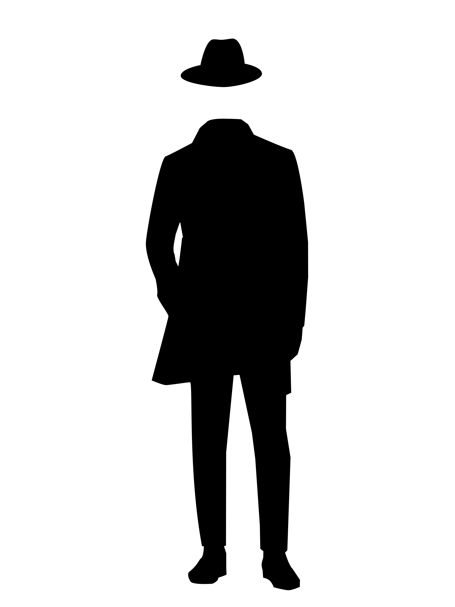

Dans les abysses de son esprit,
l'homme plonge,


Ses pensées deviennent un labyrinthe sombre,
Où la raison se perd, consumée par l'ombre.
Des horreurs indicibles dansent devant ses yeux,
Leurs regards profonds, un étrange affreux.

Perdu dans les méandres de son propre être,
Il succombe à la terreur, impuissant à renaître.
Dans ce monde intérieur, où règne la folie,
Il se noie, englouti par l'étreinte de l'agonie.